Reflection 撰写指南（D.I.E.P. 模型）
这份教学指南以 D.I.E.P. 模型组织反思写作：Describe 描述做了什么，Interpret 解释行为与结果的意义，Evaluate 判断效果并说明原因，Plan 提出下一步行动。它将研究、拼贴、绘画、写作、影像和模型制作等实践转化为可以分析的过程。
材料通过具体句式和案例，区分客观描述、解释、评价与计划，帮助学习者把创作经历写成有依据、可继续推进的反思。

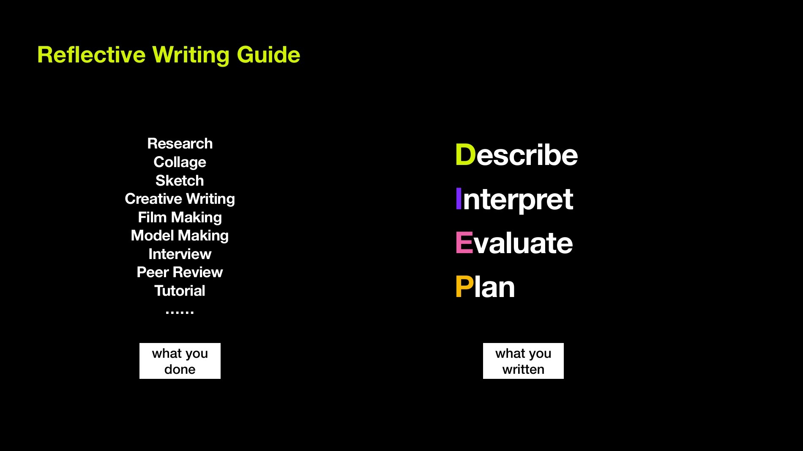

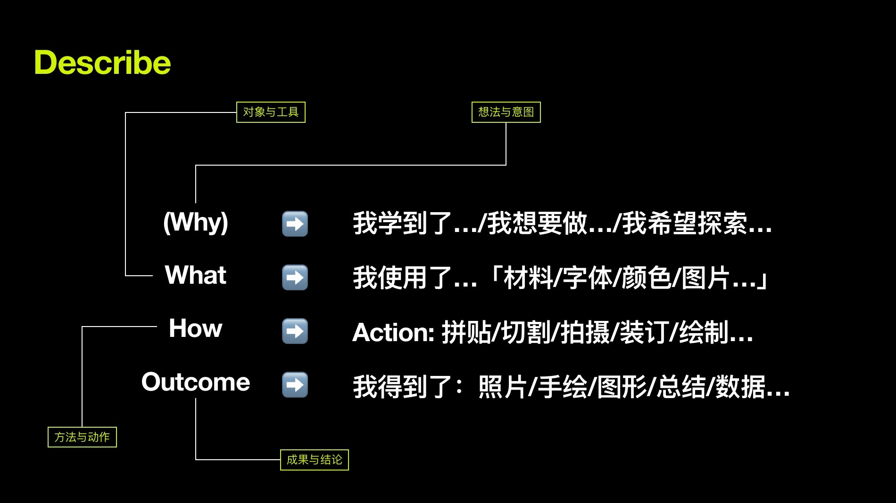

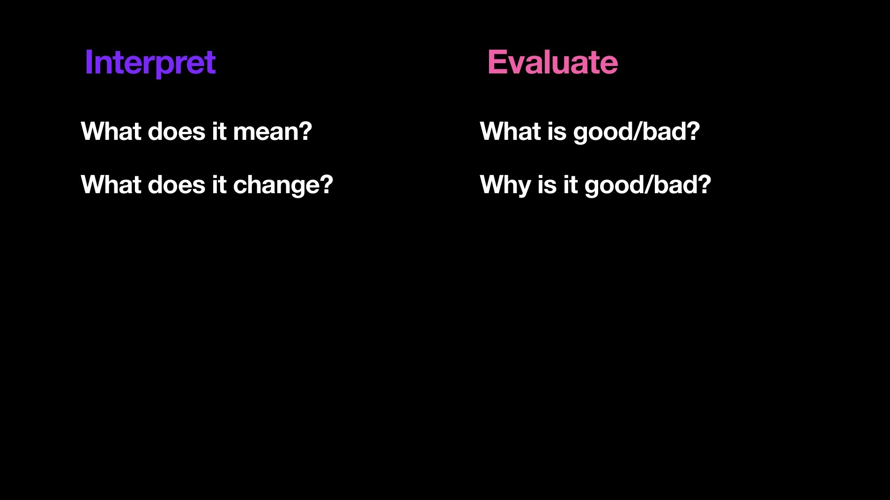

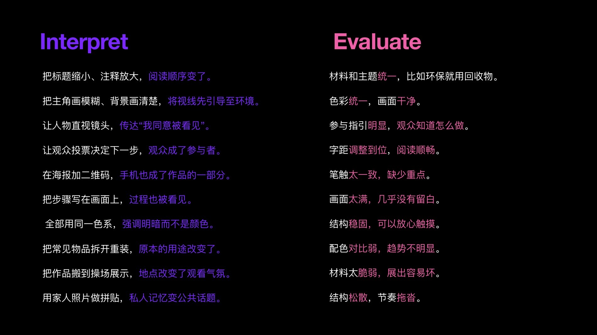

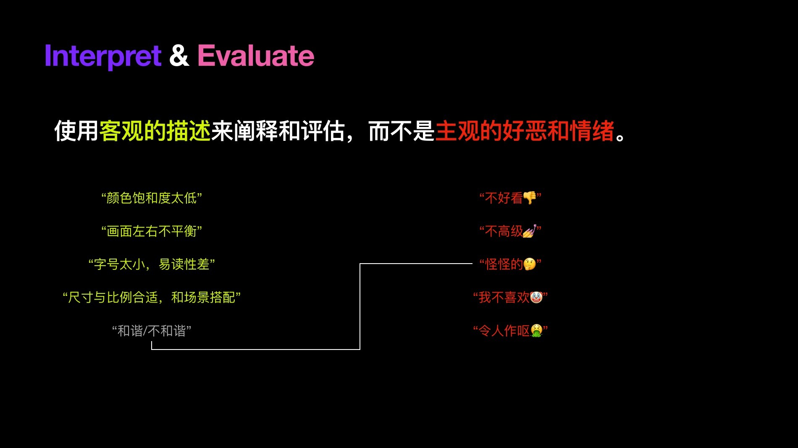

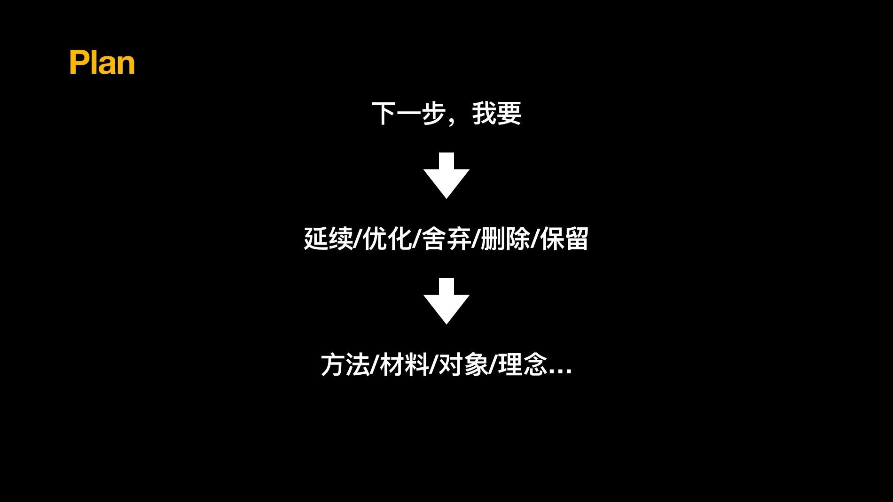

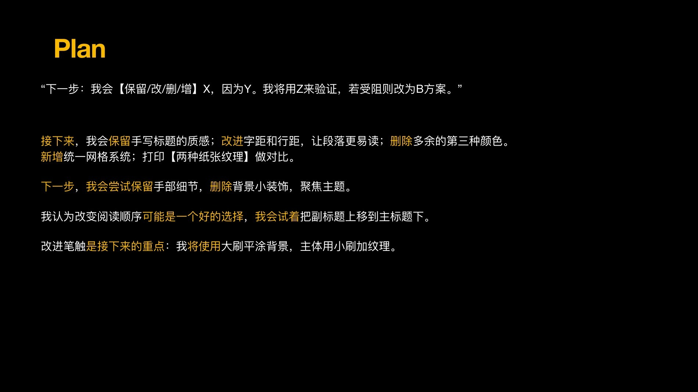

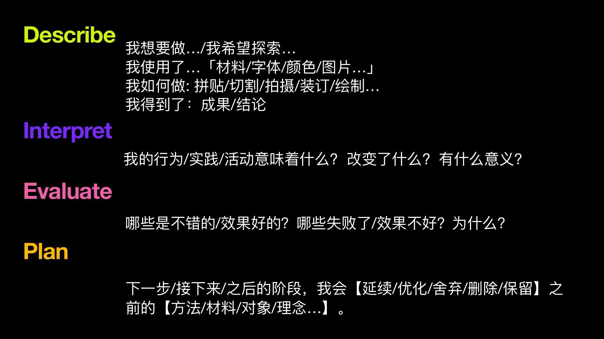

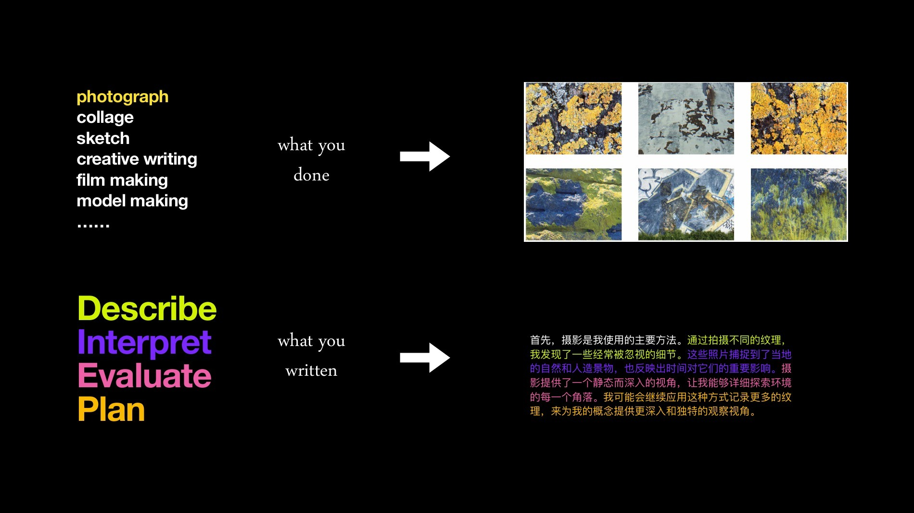

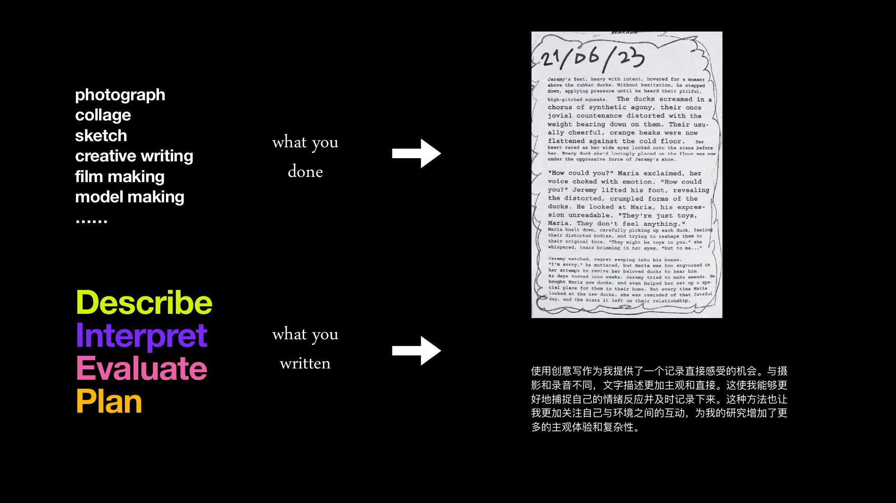

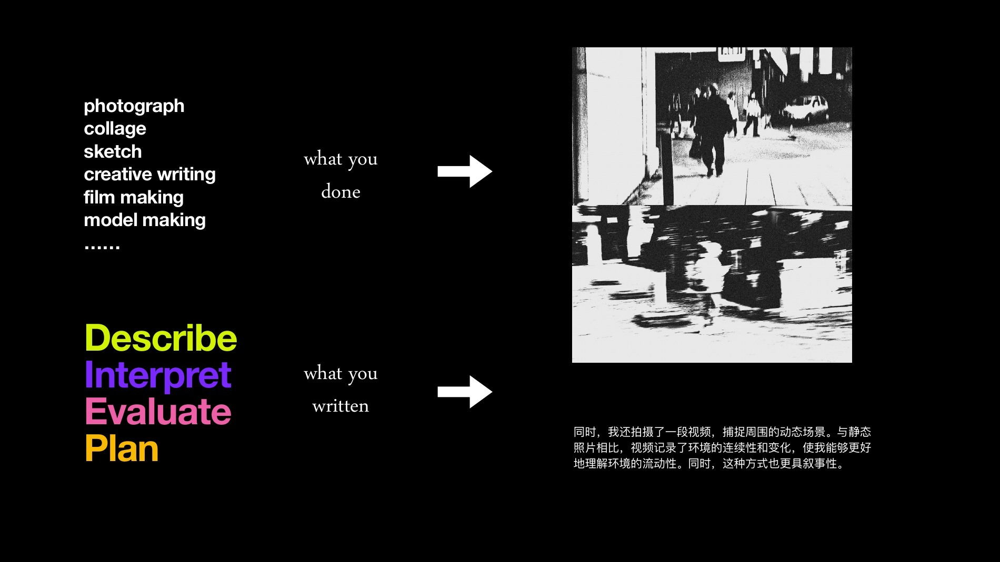

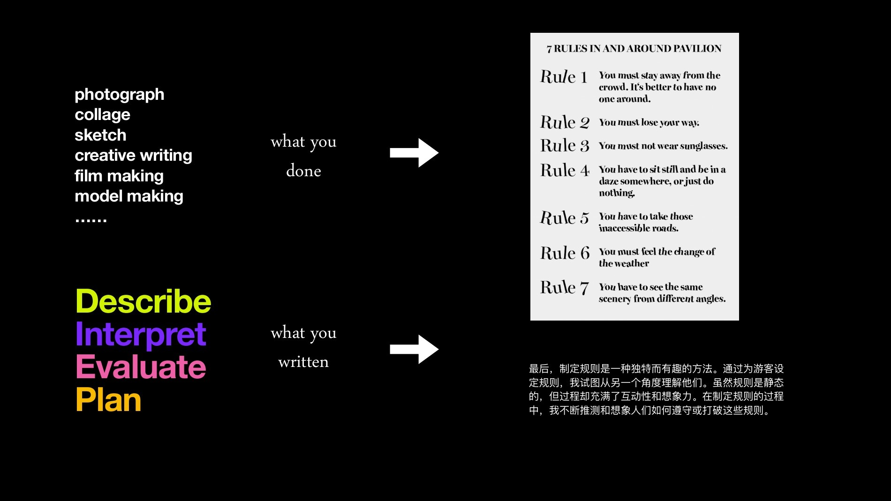